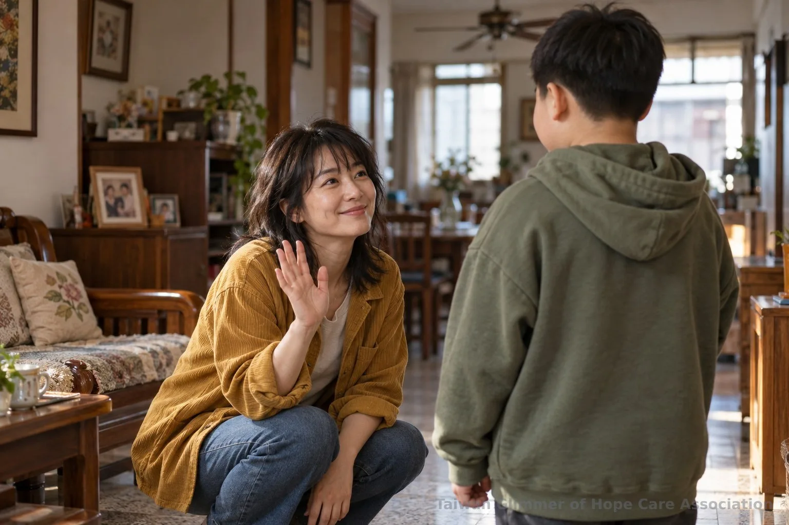
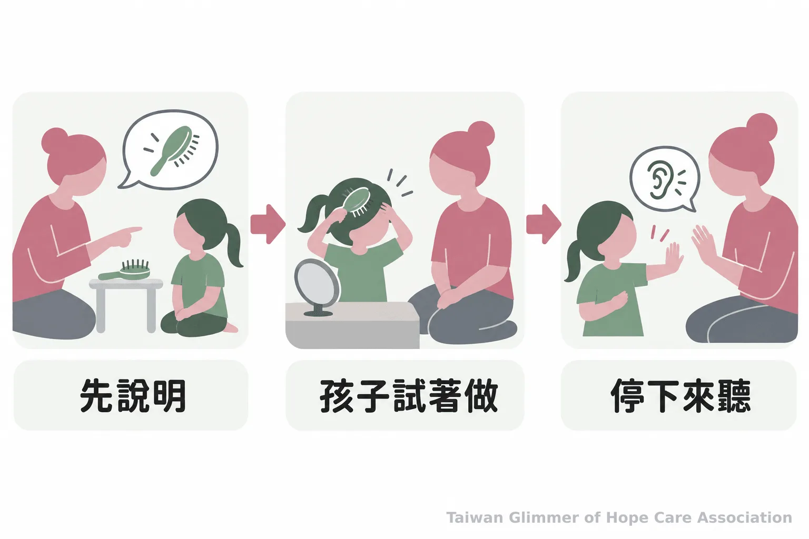
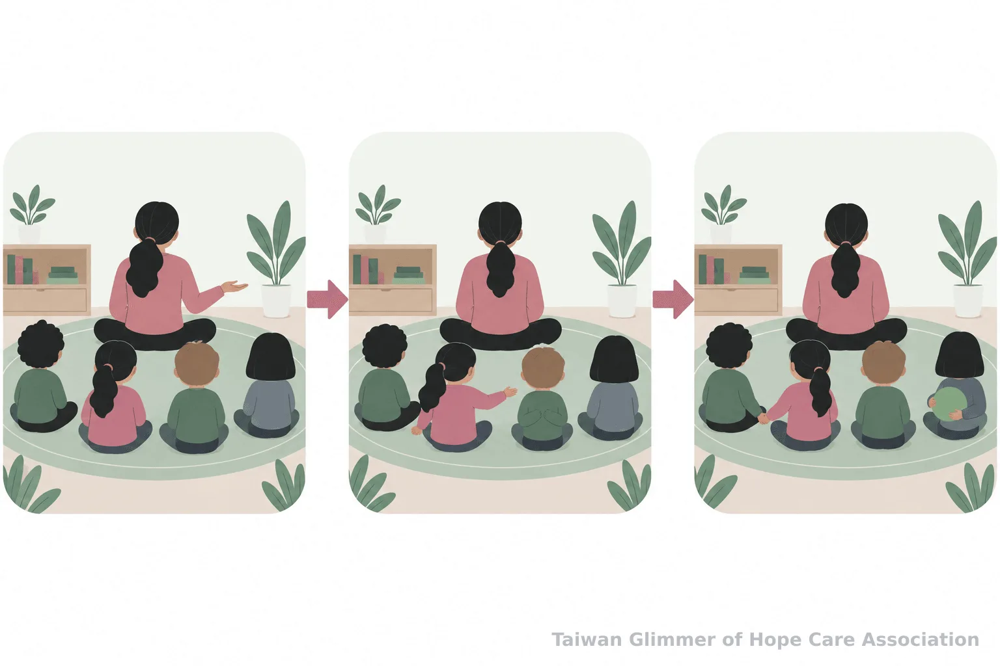

孩子不想被抱怎麼辦？從日常練習身體界線
孩子拒絕擁抱或親吻時，大人可以怎麼回應？從尊重意願、清楚說出身體部位，到微光協會的藝術陪伴與求助資源，整理家長和老師能做的事。
【微光專欄｜身體界線｜系列二之 1】
親友張開手臂，孩子卻把臉轉開，許多大人會接著勸：「打招呼要有禮貌。」這時可以先停一下，問孩子想揮手、點頭，還是說聲你好。身體自主的練習不必等孩子遇上危險才開始；日常表達意願、得到大人尊重，才是起點。保護兒童的責任始終在大人身上，教孩子說不，不能成為把責任交給孩子的理由。
一、孩子不想被抱，大人可以怎麼回應？
先停止伸手或親吻的動作，承認孩子不願意，再提供其他問候方式。孩子不必用身體接觸證明自己有禮貌。
「你想抱抱、揮手，還是說你好？」這樣的問法讓孩子有選擇，也讓來訪的親友知道大人會尊重孩子的回答。孩子若退開、搖頭或說不要，不必笑著把他推向對方，也不用責怪他害羞、不乖。大人可以代為說：「他今天想用揮手打招呼。」
同樣的原則也適用於搔癢、親臉、坐在腿上或遊戲中的身體接觸。孩子改變心意時，大人就停下來。若是穿衣、清潔等必要照顧，可以先說明要做什麼，再讓孩子在可行的地方自己選擇或嘗試，例如先自己擦手，或由大人協助。這些小互動傳達的是：身體感受可以說出來，照顧者會聽。

二、用孩子聽得懂的話，認識身體與界線
依孩子的年齡和理解能力，使用清楚的身體部位名稱，並在日常照顧前說明接下來會做什麼。
衛生福利部社會及家庭署的嬰幼兒課程以零至三歲為對象，介紹如何透過情境故事與育兒示範，引導家長和照顧者陪孩子認識身體自主性，並練習尊重地與他人互動。日常更衣、洗澡、如廁時，大人可以簡短說明：「現在要幫你換衣服了」或「你可以自己試著洗手，我在旁邊。」孩子能自己完成的部分，留一點時間讓他做。
若孩子說身體不舒服，或提起一件讓他不安的事，先聽完，不責怪，也別用「是不是某某人做的」替孩子安排答案。可以回應：「謝謝你告訴我，我會陪你找大人幫忙。」有安全疑慮時，交由適當的專業人員了解與協助。
教育部人權教育資源網收錄的國中教案，從身體界線和身體自主權出發，帶學生理解每個人的界線不同，並練習尊重他人意願。不同教材的年齡對象與教法各有差異，家長和老師可以挑選適合孩子理解程度的內容，不必要求每個孩子用同一套詞句表達。

三、把尊重意願放進親子與課堂互動
大人先示範詢問、等待和接受拒絕，再陪孩子留意別人的意願。今天願意，不代表每次都願意。
牽手前問一句「我可以牽你的手嗎？」問完等對方回答；孩子拒絕，就不勉強。老師帶團體活動時，也能提醒孩子先問同學想不想牽手或玩搔癢遊戲。孩子不必猜測彼此的想法，可以練習先問、等回答，讓這成為相處的習慣。
教育部人權教育資源網的教案把「每個人的界線都不相同」及「學習尊重他人的意願」列為課程重點。這些課堂概念可以延伸到家庭與校園的日常對話；它們不能保證預防侵害，也不能推論每個孩子面對不安時都會有相同反應。照顧者與相關制度仍須承擔保護兒童的責任。
教育部人權教育資源網收錄的教案指出，課程要協助學生認識「每個人的界線都不相同」，並學習尊重他人的意願。
- 孩子拒絕擁抱或親吻時，先停下來，再提供揮手或口頭問候等選擇。
- 照顧前說明、使用孩子聽得懂的身體部位名稱，也示範如何詢問和等待。
- 陪孩子表達界線，不代表由孩子獨自負責避免傷害；需要協助時由大人接手。

四、在微光的藝術陪伴課裡練習表達
微光協會在合作據點每月安排一堂藝術陪伴課，從藝術家作品和情緒主題帶孩子創作、分享；課程不以畫得好不好作為標準。
課堂可能從「如果今天的心情是一種顏色，你會選什麼？」開始，也會帶孩子把壓力想像成烏雲、怪獸或旋風，再為作品命名、分享想法。課程收尾時，孩子可以用「我看到……」「我喜歡……」說出觀察，也對自己說「今天的自己，很棒！」這些是藝術陪伴活動的設計，不代表藝術治療或療效評估。
目前的在地小衛星據點包括瑞芳愛鄰、板橋明穗及中壢宣愛。瑞芳是微光第一個兒童繪畫班的起點，中壢是協會在桃園的第一個據點。不同課堂各有主題紀錄：照片與紀錄，請見〈桃園第一個據點開課：中壢宣愛「心情的顏色」〉；照片與紀錄，請見〈瑞芳愛鄰據點：跟著夏卡爾，飛進我的夢想花園〉。作品分享提供孩子練習描述感受的機會，家長和老師也可以在家中、教室以相似的方式聽孩子說完，不急著評分或替他下結論。
五、有兒少保護疑慮時，找誰協助？
可撥 113 保護專線尋求諮詢或通報；若有人身安全立即危險，先撥 110 報警。
衛生福利部說明，113 保護專線全年 24 小時受理兒少保護等通報、求助與諮詢，也提供簡訊和線上諮詢。大人不確定情況時，可以先向專線說明所知內容，尋求專業人員協助；若有立即人身安全危險，依衛福部保護服務司資訊，應先撥 110。
今天就能開始一個練習：下次孩子不想被抱或親，先停下來問「你想怎麼打招呼？」孩子練習表達，大人練習尊重，也記得在需要時由大人聯絡資源、承擔保護責任。
參考資料
- 衛生福利部社會及家庭署。〈三歲前嬰幼兒的性教育（二）：引導嬰幼兒認識身體自主性與界限〉。育兒親職網。https://babyedu.sfaa.gov.tw/info/10000264?lang=Big5
- 呂巧齡（2025）。〈從尊重開始的自我保護課：認識身體界線與身體自主權〉。教育部人權教育資源網。https://hre.pro.edu.tw/materials/646
- 衛生福利部。〈兒少保護〉。https://www.mohw.gov.tw/fp-88-233-1.html
- 衛生福利部保護服務司。〈113保護專線介紹〉。https://dep.mohw.gov.tw/DOPs/cp-1183-6499-105.html
常見問題
Q1: 孩子不想被親，怎麼教才有禮貌？
可以讓孩子揮手、點頭或口頭問候。禮貌不必透過擁抱或親吻表現。
Q2: 多小的孩子可以開始談身體自主？
日常照顧時就能依孩子的理解能力，說明身體部位、照顧步驟與選擇。社家署提供零至三歲嬰幼兒家長與照顧者參考的課程。
Q3: 孩子說不要，大人每次都要照做嗎？
一般互動中應尊重拒絕；若涉及必要照顧或安全，大人應說明原因，並在可行時提供選擇。
Q4: 教孩子說不，就能避免受到侵害嗎？
不能如此保證。身體自主教育是日常親職與性教育的一部分，保護責任仍在大人與相關制度。
Q5: 有兒少保護疑慮時該打哪支電話？
可撥 113 尋求兒少保護諮詢或通報；如有人身安全立即危險，先撥 110。
本文同步刊於 appi.news。